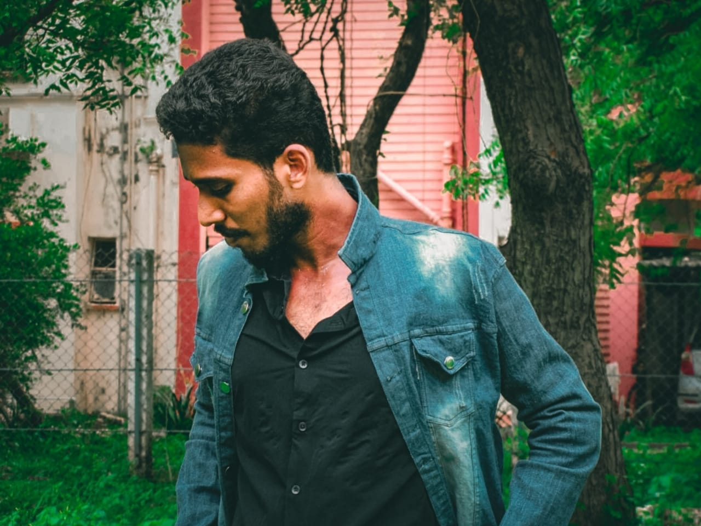
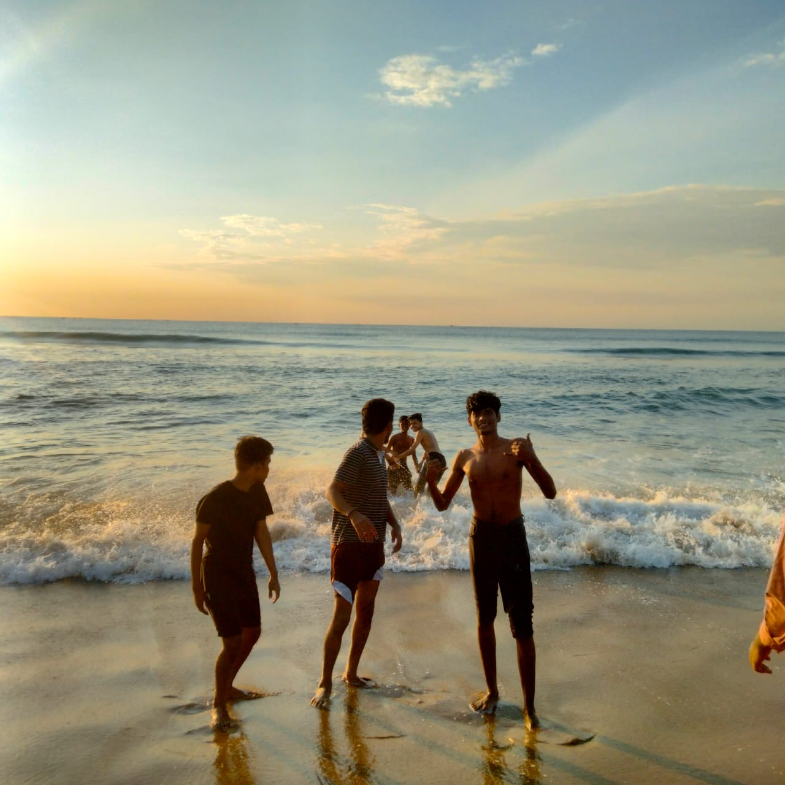

CAREER
Intrested in coding using html,css and javascript and well advanced in PYTHON

FIRST WEBSITE created by me.
I'm also intrested in taking photoshoots and thus I took this one.
So my name is UTHISH KUMAR And as i said i would love to take more photos, I took some and I'm happy to share them with you here.
This one is actually i like beach very very much. That too in early morning --HEAVEN
